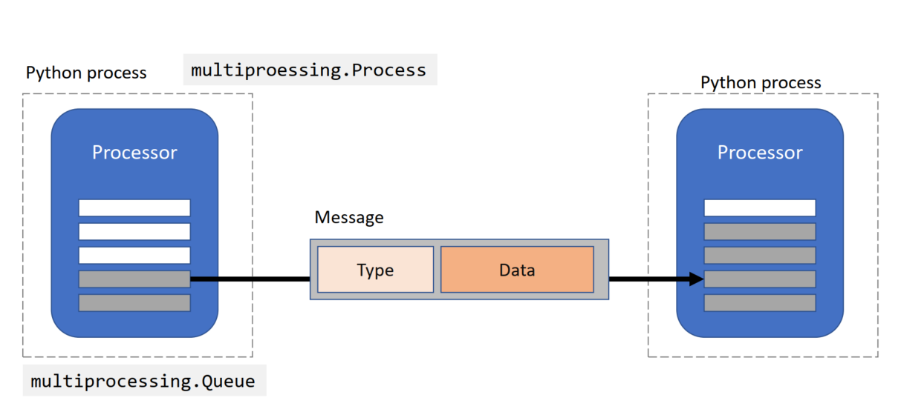

System architecture
Processor
At the core of pyneurode is the Processor class. A Processor is a multiprocessing.Process that runs in its own Python process and have a item queue (based on multiprocessing.Queue) for input data. A Processor work on the items on its input queue and generate results to be put on the output queue, which in turn are the corresponding input queues for downstream processors.

Message
[TODO]
Processor context
[TODO]
GUIProcessor and Visualizer
[TODO]